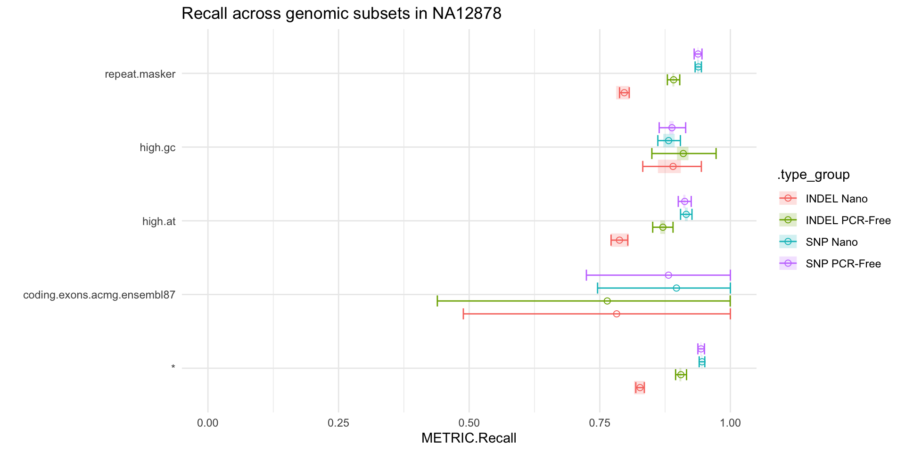
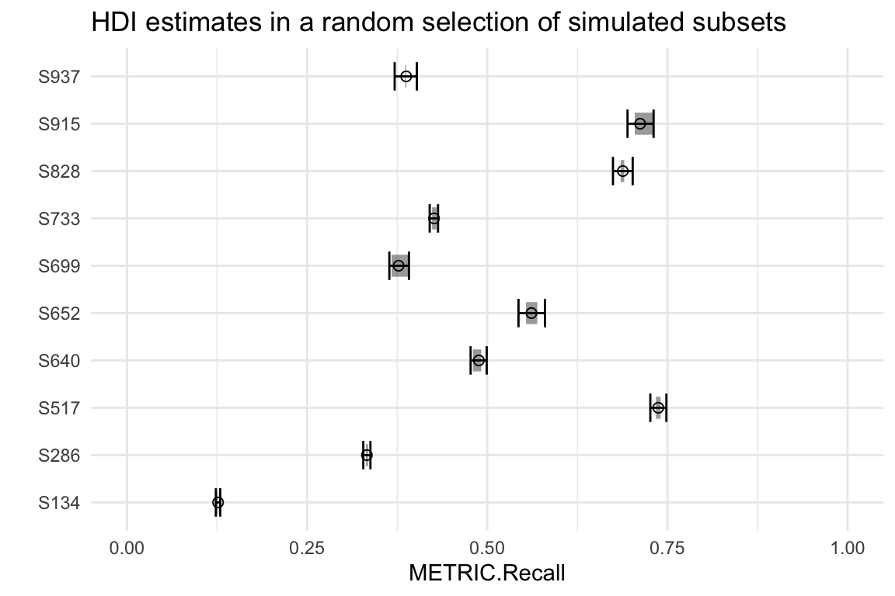

stratified_counts.RmdOne of the features of hap.py is the ability to produce TP, FP and FN counts in specific genomic subsets, as specified by the user. This opens up the possibility to compare performance metrics across genomic loci, as well as across analysis groups. However, replicate variability and variable subset sizes pose a challenge when interpreting these type of results. E.g. if we observe the counts from the table below in 4 different replicates, can we confidently claim that there is a difference in recall across conditions for subset A? And can we say that there is a difference across subsets for condition 2?
| SUBSET | TP.CONDITION_1 | TP.CONDITION_2 | TRUTH.TOTAL |
|---|---|---|---|
| A | 81,82,82,82 | 74,75,76,75 | 82 |
| B | 2,2,2,2 | 2,2,2,2 | 2 |
In this vignette we will descibe a method to calculate credible intervals for stratified counts that takes into account the challenges stated above. In particular, we will be comparing stratified recall between a set of PCR-Free vs. Nano builds from NA12878.
We will be relying on a pre-processed dataset that we have generated by running hap.py on VCFs from BaseSpace Data Central - “NovaSeq S2: TruSeq PCR-Free 350 (Replicates of NA12878)” and “NovaSeq S2: TruSeq Nano 550 - (Replicates of NA12878)”:
hap.py ${TRUTH_VCF} ${QUERY_VCF} -o ${OUTPUT_PREFIX} -f ${CONFIDENT_REGIONS} \
--threads 40 --write-counts --reference ${REF} \
--stratification ${STRATIFICATION_CONFIG} \
--roc QUAL --roc-filter LowQual --no-jsonThe example dataset consists of a set of replicates for NA12878, sequenced on NovaSeq S2 and analysed using WGSv8. 5 of the replicates have been processed using TruSeq PCR-Free, and 8 using Truseq Nano. Our goal will be to compare recall across both library preparation workflows, both at a genome-wide level, and across specific regions (coding exons in ACMG genes, high AT/GC regions and a repeat masker track). Note that, for speed reasons, we have focused our analyses on chr22, and have subsetted the truth VCF and stratification BEDs accordingly.
Let’s first load hap.py outputs into R using a happyR samplesheet:
# not run
data_dir <- "demo_data.pcrfree_vs_nano/filtered_happy/"
samplesheet <- readr::read_csv("group_id,replicate_id,happy_prefix
PCR-Free,NA12878-I30,NA12878-I30_S1
PCR-Free,NA12878-I33,NA12878-I33_S1
PCR-Free,NA12878-I47,NA12878-I47_S1
PCR-Free,NA12878-I67,NA12878-I67_S1
PCR-Free,NA12878-I82,NA12878-I82_S1
PCR-Free,NA12878-I85,NA12878-I85_S1
Nano,NA12878-R1,NA12878-R1_S1
Nano,NA12878-R2,NA12878-R2_S1
Nano,NA12878-R3,NA12878-R3_S1
Nano,NA12878-R4,NA12878-R4_S1
Nano,NA12878-R5,NA12878-R5_S1
Nano,NA12878-R6,NA12878-R6_S1
Nano,NA12878-R7,NA12878-R7_S1
Nano,NA12878-R8,NA12878-R8_S1
") %>%
mutate(happy_prefix = sprintf("%s/%s", data_dir, happy_prefix))
hap_samplesheet <- read_samplesheet_(samplesheet)
saveRDS(hap_samplesheet, file = "demo_data.Rds")# load the demo dataset from a pre-saved Rds
hap_samplesheet <- readRDS("demo_data.Rds")
class(hap_samplesheet)
#> [1] "happy_samplesheet"Once we have a happy_samplesheet object we can rely on the extract_metrics function to access our metrics of interest. Since hap.py saves stratified counts under *extended.csv files, we can use the following:
stratified_counts <- extract_results(hap_samplesheet$results, table = "extended") %>%
# focus on PASS calls in level 0 subsets
filter(Subtype == "*", Filter == "PASS", Subset.Level == 0, !grepl(pattern = "TS*", Subset)) %>%
inner_join(hap_samplesheet$samplesheet) %>%
mutate(.type_group = paste(Type, group_id))
#> Joining, by = "happy_prefix"
stratified_counts %>% head
#> # A tibble: 6 x 69
#> Type Subtype Subset Filter Genotype QQ.Field QQ METRIC.Recall
#> <chr> <chr> <chr> <chr> <chr> <chr> <dbl> <dbl>
#> 1 INDEL * * PASS * QUAL NA 0.906
#> 2 INDEL * codin… PASS * QUAL NA 1
#> 3 INDEL * high.… PASS * QUAL NA 0.875
#> 4 INDEL * high.… PASS * QUAL NA 0.905
#> 5 INDEL * repea… PASS * QUAL NA 0.892
#> 6 SNP * * PASS * QUAL NA 0.945
#> # … with 61 more variables: METRIC.Precision <dbl>, METRIC.Frac_NA <dbl>,
#> # METRIC.F1_Score <dbl>, FP.gt <int>, FP.al <int>, Subset.Size <dbl>,
#> # Subset.IS_CONF.Size <dbl>, Subset.Level <dbl>, TRUTH.TOTAL <int>,
#> # TRUTH.TOTAL.ti <dbl>, TRUTH.TOTAL.tv <dbl>, TRUTH.TOTAL.het <dbl>,
#> # TRUTH.TOTAL.homalt <dbl>, TRUTH.TOTAL.TiTv_ratio <dbl>,
#> # TRUTH.TOTAL.het_hom_ratio <dbl>, TRUTH.TP <int>, TRUTH.TP.ti <dbl>,
#> # TRUTH.TP.tv <dbl>, TRUTH.TP.het <dbl>, TRUTH.TP.homalt <dbl>,
#> # TRUTH.TP.TiTv_ratio <dbl>, TRUTH.TP.het_hom_ratio <dbl>,
#> # TRUTH.FN <int>, TRUTH.FN.ti <dbl>, TRUTH.FN.tv <dbl>,
#> # TRUTH.FN.het <dbl>, TRUTH.FN.homalt <dbl>, TRUTH.FN.TiTv_ratio <dbl>,
#> # TRUTH.FN.het_hom_ratio <dbl>, QUERY.TOTAL <int>, QUERY.TOTAL.ti <dbl>,
#> # QUERY.TOTAL.tv <dbl>, QUERY.TOTAL.het <dbl>, QUERY.TOTAL.homalt <dbl>,
#> # QUERY.TOTAL.TiTv_ratio <dbl>, QUERY.TOTAL.het_hom_ratio <dbl>,
#> # QUERY.TP <int>, QUERY.TP.ti <dbl>, QUERY.TP.tv <dbl>,
#> # QUERY.TP.het <dbl>, QUERY.TP.homalt <dbl>, QUERY.TP.TiTv_ratio <dbl>,
#> # QUERY.TP.het_hom_ratio <dbl>, QUERY.FP <int>, QUERY.FP.ti <dbl>,
#> # QUERY.FP.tv <dbl>, QUERY.FP.het <dbl>, QUERY.FP.homalt <dbl>,
#> # QUERY.FP.TiTv_ratio <dbl>, QUERY.FP.het_hom_ratio <dbl>,
#> # QUERY.UNK <int>, QUERY.UNK.ti <dbl>, QUERY.UNK.tv <dbl>,
#> # QUERY.UNK.het <dbl>, QUERY.UNK.homalt <dbl>,
#> # QUERY.UNK.TiTv_ratio <dbl>, QUERY.UNK.het_hom_ratio <dbl>,
#> # happy_prefix <chr>, group_id <chr>, replicate_id <chr>,
#> # .type_group <chr>Let’s inspect the number of true events that overlap with each of our regions of interest:
stratified_counts %>%
select(Subset, Type, Subset.Size, TRUTH.TOTAL) %>%
unique() %>%
spread(key = Type, value = TRUTH.TOTAL) %>%
rename(TRUTH.TOTAL.INDEL = INDEL) %>%
rename(TRUTH.TOTAL.SNP = SNP)
#> # A tibble: 5 x 4
#> Subset Subset.Size TRUTH.TOTAL.INDEL TRUTH.TOTAL.SNP
#> <chr> <dbl> <int> <int>
#> 1 * 40298468 8330 48280
#> 2 coding.exons.acmg.ensembl87 7153 1 6
#> 3 high.at 4222773 1654 4475
#> 4 high.gc 687864 137 965
#> 5 repeat.masker 22296513 5589 25224We can see how some subsets contain a large number of events (e.g. * and repeat.masker), whilst others barely contain any observations (e.g. coding.exons.acmg.ensembl87).
In order to reliably compare TP counts across subsets and analysis groups, we propose a method to compute highest-posterior density intervals (HDIs) from hap.py outputs. Our method is able to account for variable subset sizes and replicate variability, and is based on the following steps:
Model counts using Negative Binomial sampling: \[k_{ij} \sim NB(\rho_{i}*n_{ij}, \sigma)\] where \(k_{ij}\) = observed successes for subset i in replicate j; \(\rho_{i}\) = success rate for subset i; \(n_{ij}\) = total counts for subset i in replicate j; \(\sigma\) = dispersion parameter; \(\rho_{i} \sim Beta(1, 1)\) = \(\rho\) prior; \(\sigma \sim Normal(\mu, \sigma^2)\) = \(\sigma\) prior
Compute HDIs by sampling from the aggregate posterior
We provide a set of helper functions attached to this vignette (stratified_counts_util.R) that make it easy to calculate HDIs from the extended metrics table that we have previously imported; e.g. for stratified recall:
# not run
groups <- stratified_counts %>% select(.type_group) %>% unique() %>% unlist()
demo_hdi <- lapply(seq_along(groups), function(i) {
sel_group_type <- groups[i]
# initalise model and sample from the posterior distribution
stan_result <- sample_posterior(m = stratified_counts %>% filter(.type_group == sel_group_type),
successes_field = "TRUTH.TP", totals_field = "TRUTH.TOTAL")
# calculate 95% HDIs from posterior observations
demo_hdi <- estimate_hdi(r = stan_result, credMass = 0.95) %>%
mutate(.type_group = sel_group_type)
demo_hdi
}) %>%
bind_rows()
demo_hdi %>% head
write_csv(demo_hdi, path = "demo_hdi.csv")Finally, we can visualise our recall HDIs as follows:
dodge_width <- 0.7
demo_hdi %>%
ggplot(aes(x = subset, color = .type_group)) +
# observed
geom_errorbar(aes(ymin = obs.min, ymax = obs.max),
alpha = 0.2, size = 5, lty = 1, position = position_dodge(width = dodge_width),
width = 0) +
# estimated
geom_errorbar(aes(ymin = posterior.hdi.low, ymax = posterior.hdi.high),
size = 0.5, alpha = 1, width = 0.6, position = position_dodge(width = dodge_width)) +
geom_point(aes(y = posterior.mean), size = 2, shape = 1,
position = position_dodge(width = dodge_width)) +
xlab("") +
ylab("METRIC.Recall") +
ylim(0, 1) +
coord_flip() +
ggtitle("Recall across genomic subsets in NA12878")
We can see that, whilst the point estimates from hap.py suggest differences for INDEL recall in high GC regions in PCR-Free vs. Nano, the credible intervals are too wide to draw meaningful conclusions. Conversely, we can confidently claim that Nano impacts our ability to recall INDELs in repeat and high AT regions, compared to PCR-Free.
One way to evaluate the accuracy of our HDIs is through simulated data, where we know what the true success rate is and, as a result, we can measure how often that value is captured by our HDI estimates. However, we do not want to rely on a simulation approach that is based solely on the model that we have used for estimation, since it might not be fully representative of real data.
Let us take recall measurements across \(r\) replicates as an example. For a subset with \(n\) total variants we can classify each variant into one of these 3 groups:
We can then define our true recall \(\rho\) as follows:
\[\rho = (n*q_A*x_A + n*q_S*x_S + n*q_N*x_N) / n\]
where \(n\): total number of variants in the subset; \(q_A\): probability of having variants in group A; \(x_A\): recall in group A (will always be 1); \(q_S\): probability of having variants in group S; \(x_S\): recall in group S (variable); \(q_N\): probability of having variants in group N; \(x_N\): recall in group N (will always be 0).
From these parameters, we can simulate TP counts in one sample by drawing from a multinomial distribution that attributes each of the \(n\) variants into one of the groups using the defined probabilities \(\{q_A, q_S, q_N\}\). We can next simulate replicates from this sample by performing random binomial draws from each group with recalls \(\{x_A, x_S, x_N\}\), which in practice will be \(\{1, x_S, 0\}\). Note that the number of true positives for groups A and N will be fixed across replicates by definition, but we can still use \(x_S\) to simulate replicate variability. As a result of this variability, our observed recall will differ slightly from the theoretical expectation \(\rho\).
We can implement the simulation strategy discussed above as follows:
# not run
# simulate a sample with N subsets, by randomly assigning values to {q_A, q_S, q_N}, x_S and n
n_subsets = 1000
sim_sample = lapply(1:n_subsets, function(i) {
q = runif(3, min = 0, max = 1)
q = round(q/sum(q), 4)
d = data.frame(
i = i,
qa = q[1],
qs = q[2],
qn = q[3]
)
}) %>%
bind_rows() %>%
mutate(x = sample(x = seq(0, 1, 1e-4), size = n_subsets, replace = TRUE)) %>%
mutate(n = sample(x = seq(1e3, 1e4, 1), size = n_subsets, replace = TRUE)) %>%
mutate(expected_rho = round((n*qa + n*qs*x) / n, 4)) %>%
mutate(subset_qa_qs_qn_x_n = sprintf("S%s_%s_%s_%s_%s_%s", i, qa, qs, qn, x, n))
sim_sample %>% head
# simulate r replicates from the sample by drawing counts in each subset, with probabilities {1, x, 0}
get_counts <- function(subset_qa_qs_qn_x_n, r) {
s <- data.frame(subset_qa_qs_qn_x_n) %>%
separate(subset_qa_qs_qn_x_n, into = c("subset", "qa", "qs", "qn", "x", "n"), sep = "_")
counts <- table(sample(
factor(c("always", "sometimes", "never")), s$n, prob = c(s$qa, s$qs, s$qn), replace = TRUE))
always <- counts["always"]
sometimes <- rbinom(as.numeric(r), counts["sometimes"], as.numeric(s$x))
per_replicate_successes <- data.frame(
subset_qa_qs_qn_x_n = subset_qa_qs_qn_x_n,
replicate_id = paste("R", 1:r, sep = ""),
successes = always + sometimes,
stringsAsFactors = FALSE
)
per_replicate_successes
}
sim_replicates <- lapply(sim_sample$subset_qa_qs_qn_x_n, function(s) get_counts(s, r = 5)) %>%
bind_rows()
sim_replicates %>% head
# combine the sample and replicate datasets
sim_data <- sim_sample %>%
inner_join(sim_replicates) %>%
mutate(observed_rho = round(successes / n, 4))
sim_data %>% head
write_csv(sim_data, path = "sim_data.csv")
# calculate HDIs
stan_result <- sample_posterior(m = sim_data %>% rename(Subset = subset_qa_qs_qn_x_n),
successes_field = "successes", totals_field = "n")
sim_hdi <- estimate_hdi(r = stan_result) %>%
separate(subset, into = c("subset", "qa", "qs", "qn", "x", "n"), sep = "_") %>%
mutate(n = as.numeric(n)) %>%
mutate(obs.range = obs.max - obs.min) %>%
mutate(hdi.range = posterior.hdi.high - posterior.hdi.low)
sim_hdi %>% head
write_csv(sim_hdi, path = "sim_hdi.csv")# load pre-computed datasets
sim_data <- read_csv(file = "sim_data.csv", col_types = cols())
sim_data %>% head
#> # A tibble: 6 x 11
#> i qa qs qn x n expected_rho subset_qa_qs_qn…
#> <dbl> <dbl> <dbl> <dbl> <dbl> <dbl> <dbl> <chr>
#> 1 1 0.428 0.438 0.134 0.274 6390 0.548 S1_0.4279_0.438…
#> 2 1 0.428 0.438 0.134 0.274 6390 0.548 S1_0.4279_0.438…
#> 3 1 0.428 0.438 0.134 0.274 6390 0.548 S1_0.4279_0.438…
#> 4 1 0.428 0.438 0.134 0.274 6390 0.548 S1_0.4279_0.438…
#> 5 1 0.428 0.438 0.134 0.274 6390 0.548 S1_0.4279_0.438…
#> 6 2 0.417 0.322 0.261 0.944 9721 0.721 S2_0.417_0.3223…
#> # … with 3 more variables: replicate_id <chr>, successes <dbl>,
#> # observed_rho <dbl>
sim_hdi <- read_csv(file = "sim_hdi.csv", col_types = cols())
sim_hdi %>% head
#> # A tibble: 6 x 16
#> i subset qa qs qn x n n.obs prior.mean obs.min
#> <dbl> <chr> <dbl> <dbl> <dbl> <dbl> <dbl> <dbl> <dbl> <dbl>
#> 1 1 S1 0.428 0.438 0.134 0.274 6390 5 0.549 0.544
#> 2 2 S10 0.414 0.204 0.382 0.204 9486 5 0.451 0.449
#> 3 3 S100 0.772 0.186 0.0416 0.741 5834 5 0.913 0.910
#> 4 4 S1000 0.466 0.0687 0.465 0.354 1484 5 0.483 0.478
#> 5 5 S101 0.489 0.450 0.0611 0.782 7549 5 0.837 0.833
#> 6 6 S102 0.153 0.411 0.436 0.213 3852 5 0.242 0.239
#> # … with 6 more variables: obs.max <dbl>, posterior.mean <dbl>,
#> # posterior.hdi.low <dbl>, posterior.hdi.high <dbl>, obs.range <dbl>,
#> # hdi.range <dbl>By comparing the expected vs. observed success rates (\(\rho\)) from our simulated dataset, we can confirm that our simulation has indeed produced the intended variability:
sim_data %>%
ggplot() +
geom_abline(slope = 1, color = "gray70", lty = 2, lwd = 0.25) +
geom_point(aes(x = expected_rho, y = observed_rho, color = replicate_id), shape = 1, size = 1) +
ggtitle("Replicate variability in our simulated dataset")We can also inspect if our HDIs respond to the variables of interest, that is, subset size and replicate variability:
p1 <- sim_hdi %>%
ggplot(aes(x = n, y = hdi.range)) +
geom_point(alpha = 0.5) +
ggtitle("HDI range decreases with subset size")
p2 <- sim_hdi %>%
ggplot(aes(x = obs.range, y = hdi.range)) +
geom_point(alpha = 0.5) +
ggtitle("HDI range increases with replicate variability")
gridExtra::grid.arrange(p1, p2, nrow = 1)And we can confirm that our HDIs contain the simulated per-replicate probabilities by inspecting a few subsets:
i <- sample(seq(1, dim(sim_hdi)[1]), size = 10, replace = FALSE)
sel_subsets <- paste("S", i, sep = "")
dodge_width <- 0.7
sim_hdi %>%
filter(subset %in% sel_subsets) %>%
ggplot(aes(x = subset)) +
# observed
geom_errorbar(aes(ymin = obs.min, ymax = obs.max),
alpha = 0.4, size = 5, lty = 1, position = position_dodge(width = dodge_width),
width = 0) +
# estimated
geom_errorbar(aes(ymin = posterior.hdi.low, ymax = posterior.hdi.high),
size = 0.5, alpha = 1, width = 0.6, position = position_dodge(width = dodge_width)) +
geom_point(aes(y = posterior.mean), size = 2, shape = 1,
position = position_dodge(width = dodge_width)) +
ylab("METRIC.Recall") +
xlab("") +
ylim(0, 1) +
coord_flip() +
ggtitle("HDI estimates in a random selection of simulated subsets")
Last, we can extend the evaluation to all subsets and quantify what proportion of HDIs contain all 5 replicate observations (should be close to 95%):
obs_in_hdi <- sim_hdi %>%
mutate(obs_min_in_hdi = ifelse(posterior.hdi.low <= obs.min, TRUE, FALSE)) %>%
mutate(obs_max_in_hdi = ifelse(posterior.hdi.high >= obs.max, TRUE, FALSE)) %>%
mutate(all_obs_in_hdi = obs_min_in_hdi & obs_max_in_hdi)
obs_in_hdi %>%
group_by(all_obs_in_hdi) %>%
summarise(n = n())
#> # A tibble: 2 x 2
#> all_obs_in_hdi n
#> <lgl> <int>
#> 1 FALSE 74
#> 2 TRUE 926